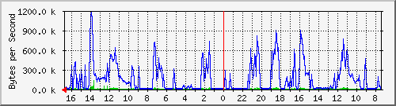

PERISUR-RECINTO FISCAL
| System:MRTG | Core Perisur |
| Maintainer:dangelesc@finanzas.cdmx.gob.mx | |
| Description: | GigabitEthernet2/30 OA.Recinto.Fiscal-L2L |
| ifType: | ethernetCsmacd (6) |
| ifName: | Gi2/30 |
| Max Speed: | 12.5 MBytes/s |
| Ip: | No Ip (No DNS name) |
Estadísticas actualizadas el Miércoles 16 de Junio de 2021 a las 16:45,
'Core_Perisur.finanzas.df.gob.mx' ha estado funcionando durante 434 days, 21:33:09.
Gráfico diario (5 minutos : Promedio)

|
Máx |
Promedio |
Actual |
| Entrante: |
135.3 kB/s (1.1%) |
8299.0 B/s (0.1%) |
3712.0 B/s (0.0%) |
| Saliente: |
1181.1 kB/s (9.4%) |
155.2 kB/s (1.2%) |
24.5 kB/s (0.2%) |
Gráfico semanal (30 minutos : Promedio)
|
Máx |
Promedio |
Actual |
| Entrante: |
72.2 kB/s (0.6%) |
9283.0 B/s (0.1%) |
8248.0 B/s (0.1%) |
| Saliente: |
772.5 kB/s (6.2%) |
174.4 kB/s (1.4%) |
23.9 kB/s (0.2%) |
Gráfico mensual (2 horas : Promedio)
|
Máx |
Promedio |
Actual |
| Entrante: |
40.0 kB/s (0.3%) |
8327.0 B/s (0.1%) |
20.1 kB/s (0.2%) |
| Saliente: |
693.8 kB/s (5.6%) |
169.4 kB/s (1.4%) |
295.4 kB/s (2.4%) |
Gráfico anual (1 día : Promedio)

|
Máx |
Promedio |
Actual |
| Entrante: |
30.6 kB/s (0.2%) |
8313.0 B/s (0.1%) |
7492.0 B/s (0.1%) |
| Saliente: |
273.3 kB/s (2.2%) |
143.8 kB/s (1.2%) |
153.8 kB/s (1.2%) |
| VERDE ### |
Tráfico entrante en Bytes por segundo |
| AZUL ### |
Saliente:going Traffic in Bytes per Second |